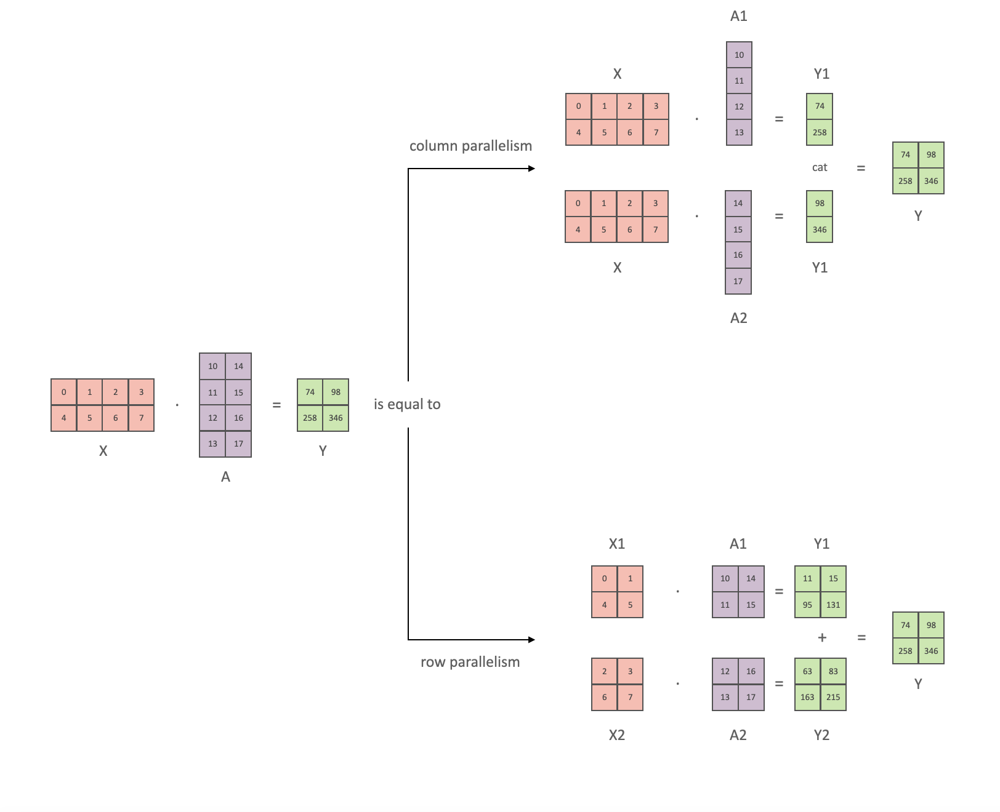
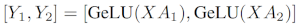
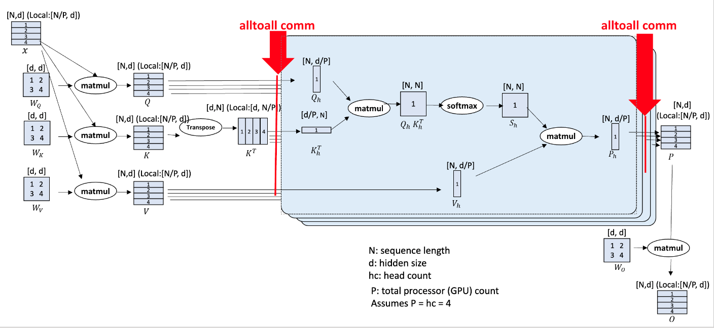
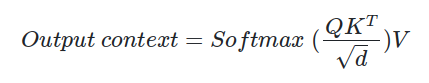

Model Parallelism
Parallelism overview
In the modern machine learning the various approaches to parallelism are used to:
- Overcome GPU memory limitations. Examples:
- fit very large models - e.g., t5-11b is 45GB in just model params
- fit very long sequences - e.g.,
- significantly speed up training - finish training that would take a year in hours
We will first discuss in depth various 1D parallelism techniques and their pros and cons and then look at how they can be combined into 2D and 3D parallelism to enable an even faster training and to support even bigger models. Various other powerful alternative approaches will be presented.
While the main concepts most likely will apply to any other framework, this article is focused on PyTorch-based implementations.
Two main approaches are used to enable training and inferring models that are bigger than the accelerator’s memory: 1. 3D parallelism - very network efficient, but can be very invasive into the modeling code and require a lot more work to make it work correctly 2. ZeRO parallelism - not very network efficient, but requires close to zero changes to the modeling code and very easy to make to work.
Scalability concepts
The following is the brief description of the main concepts that will be described later in depth in this document.
- Data Parallelism (DP) - the same setup is replicated multiple times, and each being fed a slice of the data. The processing is done in parallel and all setups are synchronized at the end of each training step.
- TensorParallelism (TP) - each tensor is split up into multiple chunks, so instead of having the whole tensor reside on a single gpu, each shard of the tensor resides on its designated gpu. During processing each shard gets processed separately and in parallel on different GPUs and the results are synced at the end of the step. This is what one may call horizontal parallelism, as the splitting happens on horizontal level.
- PipelineParallelism (PP) - the model is split up vertically (layer-level) across multiple GPUs, so that only one or several layers of the model are places on a single gpu. Each gpu processes in parallel different stages of the pipeline and working on a small chunk of the batch.
- Zero Redundancy Optimizer (ZeRO) - Also performs sharding of the tensors somewhat similar to TP, except the whole tensor gets reconstructed in time for a forward or backward computation, therefore the model doesn’t need to be modified. It also supports various offloading techniques to compensate for limited GPU memory. Sharded DDP is another name for the foundational ZeRO concept as used by various other implementations of ZeRO.
- Sequence Parallelism - training on long input sequences requires huge amounts of GPU memory. This technique splits the processing of a single sequence across multiple GPUs.
The introduction sections of this paper is probably one of the best explanations I have found on most common parallelism techniques Breadth-First Pipeline Parallelism.
Data Parallelism
DDP
Most users with just 2 GPUs already enjoy the increased training speed up thanks to DataParallel (DP) and DistributedDataParallel (DDP) that are almost trivial to use. This is a built-in feature of Pytorch.
For details see DistributedDataParallel
ZeRO Data Parallelism
ZeRO-powered data parallelism (ZeRO-DP) is described on the following diagram from this blog post 
It can be difficult to wrap one’s head around it, but in reality the concept is quite simple. This is just the usual DataParallel (DP), except, instead of replicating the full model params, gradients and optimizer states, each GPU stores only a slice of it. And then at run-time when the full layer params are needed just for the given layer, all GPUs synchronize to give each other parts that they miss - this is it.
Consider this simple model with 3 layers, where each layer has 3 params:
La | Lb | Lc
---|----|---
a0 | b0 | c0
a1 | b1 | c1
a2 | b2 | c2Layer La has weights a0, a1 and a2.
If we have 3 GPUs, the Sharded DDP (= Zero-DP) splits the model onto 3 GPUs like so:
GPU0:
La | Lb | Lc
---|----|---
a0 | b0 | c0
GPU1:
La | Lb | Lc
---|----|---
a1 | b1 | c1
GPU2:
La | Lb | Lc
---|----|---
a2 | b2 | c2In a way this is the same horizontal slicing, as tensor parallelism, if you imagine the typical DNN diagram. Vertical slicing is where one puts whole layer-groups on different GPUs. But it’s just the starting point.
Now each of these GPUs will get the usual mini-batch as it works in DP:
x0 => GPU0
x1 => GPU1
x2 => GPU2The inputs are unmodified - they think they are going to be processed by the normal model.
First, the inputs hit the layer La.
Let’s focus just on GPU0: x0 needs a0, a1, a2 params to do its forward path, but GPU0 has only a0 - it gets sent a1 from GPU1 and a2 from GPU2, bringing all pieces of the model together.
In parallel, GPU1 gets mini-batch x1 and it only has a1, but needs a0 and a2 params, so it gets those from GPU0 and GPU2.
Same happens to GPU2 that gets input x2. It gets a0 and a1 from GPU0 and GPU1, and with its a2 it reconstructs the full tensor.
All 3 GPUs get the full tensors reconstructed and a forward happens.
As soon as the calculation is done, the data that is no longer needed gets dropped - it’s only used during the calculation. The reconstruction is done efficiently via a pre-fetch.
And the whole process is repeated for layer Lb, then Lc forward-wise, and then backward Lc -> Lb -> La.
To me this sounds like an efficient group backpacking weight distribution strategy:
- person A carries the tent
- person B carries the stove
- person C carries the axe
Now each night they all share what they have with others and get from others what they don’t have, and in the morning they pack up their allocated type of gear and continue on their way. This is Sharded DDP / Zero DP.
Compare this strategy to the simple one where each person has to carry their own tent, stove and axe, which would be far more inefficient. This is DataParallel (DP and DDP) in Pytorch.
While reading the literature on this topic you may encounter the following synonyms: Sharded, Partitioned.
If you pay close attention the way ZeRO partitions the model’s weights - it looks very similar to tensor parallelism which will be discussed later. This is because it partitions/shards each layer’s weights, unlike vertical model parallelism which is discussed next.
Implementations of ZeRO-DP stages 1+2+3: - DeepSpeed - PyTorch (originally it was implemented in FairScale and later it was upstreamed into the PyTorch core)
Deepspeed ZeRO Integration: - HF Trainer integration - Accelerate - PyTorch Lightning - Determined.AI
FSDP Integration: - HF Trainer integration - Accelerate - PyTorch Lightning
Important papers:
Deepspeed: - ZeRO: Memory Optimizations Toward Training Trillion Parameter Models - ZeRO-Offload: Democratizing Billion-Scale Model Training - ZeRO-Infinity: Breaking the GPU Memory Wall for Extreme Scale Deep Learning - ZeRO++: Extremely Efficient Collective Communication for Giant Model Training - DeepSpeed Ulysses: System Optimizations for Enabling Training of Extreme Long Sequence Transformer Models
PyTorch: - PyTorch FSDP: Experiences on Scaling Fully Sharded Data Parallel
Main DeepSpeed ZeRO Resources: - Project’s github - Usage docs - API docs - Blog posts
ZeRO with multiple replicas
By default ZeRO uses all GPUs to create a single model replica - that’s the model is spread out across all gpus. Which leads to various limitations such as:
- the global batch size is inflexible - it’s always a function of
total_gpus*micro_batch_size- which on large clusters could lead to a huge global batch size which might be detrimental for efficient convergence. Granted one could use a tiny micro batch size to keep the global batch size in check, but this leads to smaller matrices on each GPU which results in less efficient compute - the much faster intra-node networking is not being benefited from since the slower inter-node network defines the overall speed of communications.
ZeRO++ solves the 2nd limitation by introducing Hierarchical Weight Partition for ZeRO (hpZ). In this approach instead of spreading whole model weights across all the gpus, each model replica is restricted to a single node. This increases the memory usage by the total number of nodes, but now the 2x all_gather calls to gather the sharded components are performed over a much faster intra-node connection. Only the reduce_scatter to aggregate and redistribute gradients is performed over the slower inter-node network.
The first limitation doesn’t exactly get fixed since the overall global batch size remains the same, but since each replica is more efficient and because the additional memory pressure is likely to limit the possible micro batch size on each gpu, this overall should improve the throughput of the system.
PyTorch FSDP has this feature implemented in shardingStrategy.HYBRID_SHARD
Papers:
ZeRO variations
Published papers that propose modifications to the ZeRO protocol:
Pipeline Parallelism methods
Naive Model Parallelism (Vertical)
Naive Model Parallelism (MP) is where one spreads groups of model layers across multiple GPUs. The mechanism is relatively simple - switch the desired layers .to() the desired devices and now whenever the data goes in and out those layers switch the data to the same device as the layer and leave the rest unmodified.
We refer to it as Vertical MP, because if you remember how most models are drawn, we slice the layers vertically. For example, if the following diagram shows an 8-layer model:
=================== ===================
| 0 | 1 | 2 | 3 | | 4 | 5 | 6 | 7 |
=================== ===================
gpu0 gpu1we just sliced it in 2 vertically, placing layers 0-3 onto GPU0 and 4-7 to GPU1.
Now while data travels from layer 0 to 1, 1 to 2 and 2 to 3 this is just the normal model. But when data needs to pass from layer 3 to layer 4 it needs to travel from GPU0 to GPU1 which introduces a communication overhead. If the participating GPUs are on the same compute node (e.g. same physical machine) this copying is pretty fast, but if the GPUs are located on different compute nodes (e.g. multiple machines) the communication overhead could be significantly larger.
Then layers 4 to 5 to 6 to 7 are as a normal model would have and when the 7th layer completes we often need to send the data back to layer 0 where the labels are (or alternatively send the labels to the last layer). Now the loss can be computed and the optimizer can do its work.
Problems: - the main deficiency and why this one is called “naive” MP, is that all but one GPU is idle at any given moment. So if 4 GPUs are used, it’s almost identical to quadrupling the amount of memory of a single GPU, and ignoring the rest of the hardware. Plus there is the overhead of copying the data between devices. So 4x 6GB cards will be able to accommodate the same size as 1x 24GB card using naive MP, except the latter will complete the training faster, since it doesn’t have the data copying overhead. But, say, if you have 40GB cards and need to fit a 45GB model you can with 4x 40GB cards (but barely because of the gradient and optimizer states) - shared embeddings may need to get copied back and forth between GPUs.
Pipeline Parallelism
Pipeline Parallelism (PP) is almost identical to a naive MP, but it solves the GPU idling problem, by chunking the incoming batch into micro-batches and artificially creating a pipeline, which allows different GPUs to concurrently participate in the computation process.
The following illustration from the GPipe paper shows the naive MP on the top, and PP on the bottom:

It’s easy to see from the bottom diagram how PP has less dead zones, where GPUs are idle. The idle parts are referred to as the “bubble”.
Both parts of the diagram show a parallelism that is of degree 4. That is 4 GPUs are participating in the pipeline. So there is the forward path of 4 pipe stages F0, F1, F2 and F3 and then the return reverse order backward path of B3, B2, B1 and B0.
PP introduces a new hyper-parameter to tune and it’s chunks which defines how many chunks of data are sent in a sequence through the same pipe stage. For example, in the bottom diagram you can see that chunks=4. GPU0 performs the same forward path on chunk 0, 1, 2 and 3 (F0,0, F0,1, F0,2, F0,3) and then it waits for other GPUs to do their work and only when their work is starting to be complete, GPU0 starts to work again doing the backward path for chunks 3, 2, 1 and 0 (B0,3, B0,2, B0,1, B0,0).
Note that conceptually this is the same concept as gradient accumulation steps (GAS). Pytorch uses chunks, whereas DeepSpeed refers to the same hyper-parameter as GAS.
Because of the chunks, PP introduces the concept of micro-batches (MBS). DP splits the global data batch size into mini-batches, so if you have a DP degree of 4, a global batch size of 1024 gets split up into 4 mini-batches of 256 each (1024/4). And if the number of chunks (or GAS) is 32 we end up with a micro-batch size of 8 (256/32). Each Pipeline stage works with a single micro-batch at a time.
To calculate the global batch size of the DP + PP setup we then do: mbs*chunks*dp_degree (8*32*4=1024).
Let’s go back to the diagram.
With chunks=1 you end up with the naive MP, which is very inefficient. With a very large chunks value you end up with tiny micro-batch sizes which could be not every efficient either. So one has to experiment to find the value that leads to the highest efficient utilization of the gpus.
While the diagram shows that there is a bubble of “dead” time that can’t be parallelized because the last forward stage has to wait for backward to complete the pipeline, the purpose of finding the best value for chunks is to enable a high concurrent GPU utilization across all participating GPUs which translates to minimizing the size of the bubble.
The choice of the schedule is critical to the efficient performance, with the most common schedules being in the order of invention:
- sequential Gpipe: Efficient training of giant neural networks using pipeline parallelism
- interleaved 1F1B Pipedream: Fast and efficient pipeline parallel dnn training
- looped, depth-first Efficient large-scale language model training on gpu clusters using Megatron-LM
- breadth-first Breadth-First Pipeline Parallelism
Here is for example an interleaved pipeline:

Here the bubble (idle time) is further minimized by prioritizing backward passes.
It’s used by DeepSpeed, Varuna and SageMaker to name a few.
Varuna further tries to improve the schedule by using simulations to discover the most efficient scheduling.
There are 2 groups of PP solutions - the traditional Pipeline API and the more modern solutions that make things much easier for the end user by helping to partially or fully automate the process:
- Traditional Pipeline API solutions:
- Megatron-LM
- DeepSpeed
- PyTorch
- Modern solutions:
- PiPPy
- Varuna
- Sagemaker
Problems with traditional Pipeline API solutions: - have to modify the model quite heavily, because Pipeline requires one to rewrite the normal flow of modules into a nn.Sequential sequence of the same, which may require changes to the design of the model. - currently the Pipeline API is very restricted. If you had a bunch of python variables being passed in the very first stage of the Pipeline, you will have to find a way around it. Currently, the pipeline interface requires either a single Tensor or a tuple of Tensors as the only input and output. These tensors must have a batch size as the very first dimension, since pipeline is going to chunk the mini batch into micro-batches. Possible improvements are being discussed here https://github.com/pytorch/pytorch/pull/50693 - conditional control flow at the level of pipe stages is not possible - e.g., Encoder-Decoder models like T5 require special workarounds to handle a conditional encoder stage. - have to arrange each layer so that the output of one model becomes an input to the other model.
I’m yet to try to experiment with Varuna and SageMaker but their papers report that they have overcome the list of problems mentioned above and that they require much smaller changes to the user’s model.
Implementations: - Pytorch (initial support in pytorch-1.8, and progressively getting improved in 1.9 and more so in 1.10). Some examples - FairScale - DeepSpeed - Megatron-LM has an internal implementation - no API. - Varuna - SageMaker - this is a proprietary solution that can only be used on AWS. - OSLO - this is implemented based on the Hugging Face Transformers. - PiPPy: Pipeline Parallelism for PyTorch - automatic PP via torch.fx - nanotron
Tensor Parallelism
In Tensor Parallelism each GPU processes only a slice of a tensor and only aggregates the full tensor for operations that require the whole thing.
In this section we use concepts and diagrams from the Megatron-LM paper: Efficient Large-Scale Language Model Training on GPU Clusters.
The main building block of any transformer is a fully connected nn.Linear followed by a nonlinear activation GeLU.
Following the Megatron’s paper notation, we can write the dot-product part of it as Y = GeLU(XA), where X and Y are the input and output vectors, and A is the weight matrix.
If we look at the computation in matrix form, it’s easy to see how the matrix multiplication can be split between multiple GPUs: 
If we split the weight matrix A column-wise across N GPUs and perform matrix multiplications XA_1 through XA_n in parallel, then we will end up with N output vectors Y_1, Y_2, ..., Y_n which can be fed into GeLU independently: 
Using this principle, we can update an MLP of arbitrary depth, without the need for any synchronization between GPUs until the very end, where we need to reconstruct the output vector from shards. The Megatron-LM paper authors provide a helpful illustration for that: 
Parallelizing the multi-headed attention layers is even simpler, since they are already inherently parallel, due to having multiple independent heads! 
Important: TP requires very fast network, and therefore since typically intra-node networks are much faster than inter-node networks it’s not advisable to do TP across nodes. Practically, if a node has 4 GPUs, the highest TP degree is therefore 4. If you need a TP degree of 8, you need to use nodes that have at least 8 GPUs.
Important: TP degree shouldn’t span across nodes. For example if the node has 8 gpus, TP degree should be no more than 8.
TP can combined with other parallelization methods.
Alternative names: - DeepSpeed calls it tensor slicing
Implementations: - Megatron-LM has an internal implementation, as it’s very model-specific - PyTorch - SageMaker - this is a proprietary solution that can only be used on AWS. - OSLO has the tensor parallelism implementation based on the Transformers. - nanotron - parallelformers (only inference at the moment)
DP+PP
The following diagram from the DeepSpeed pipeline tutorial demonstrates how one combines DP with PP.

Here it’s important to see how DP rank 0 doesn’t see GPU2 and DP rank 1 doesn’t see GPU3. To DP there is just GPUs 0 and 1 where it feeds data as if there were just 2 GPUs. GPU0 “secretly” offloads some of its load to GPU2 using PP. And GPU1 does the same by enlisting GPU3 to its aid.
Since each dimension requires at least 2 GPUs, here you’d need at least 4 GPUs.
Implementations: - DeepSpeed - Megatron-LM - Varuna - SageMaker - OSLO - nanotron
DP+PP+TP
To get an even more efficient training a 3D parallelism is used where PP is combined with TP and DP. This can be seen in the following diagram.

This diagram is from a blog post 3D parallelism: Scaling to trillion-parameter models, which is a good read as well.
Since each dimension requires at least 2 GPUs, here you’d need at least 8 GPUs.
Implementations: - DeepSpeed - DeepSpeed also includes an even more efficient DP, which they call ZeRO-DP. - Megatron-LM - Varuna - SageMaker - OSLO - nanotron
ZeRO DP+PP+TP
One of the main features of DeepSpeed is ZeRO, which is a super-scalable extension of DP. It has already been discussed in ZeRO Data Parallelism. Normally it’s a standalone feature that doesn’t require PP or TP. But it can be combined with PP and TP.
When ZeRO-DP is combined with PP (and optionally TP) it typically enables only ZeRO stage 1 (optimizer sharding).
While it’s theoretically possible to use ZeRO stage 2 (gradient sharding) with Pipeline Parallelism, it will have bad performance impacts. There would need to be an additional reduce-scatter collective for every micro-batch to aggregate the gradients before sharding, which adds a potentially significant communication overhead. By nature of Pipeline Parallelism, small micro-batches are used and instead the focus is on trying to balance arithmetic intensity (micro-batch size) with minimizing the Pipeline bubble (number of micro-batches). Therefore those communication costs are going to hurt.
In addition, there are already fewer layers than normal due to PP and so the memory savings won’t be huge. PP already reduces gradient size by 1/PP, and so gradient sharding savings on top of that are less significant than pure DP.
ZeRO stage 3 is not a good choice either for the same reason - more inter-node communications required.
And since we have ZeRO, the other benefit is ZeRO-Offload. Since this is stage 1 optimizer states can be offloaded to CPU.
Implementations: - Megatron-DeepSpeed and Megatron-Deepspeed from BigScience, which is the fork of the former repo. - OSLO
Important papers:
Sequence Parallelism
ML tasks, such as DNA sequencing, may require training with very long sequence lengths (e.g. 256K), and even normal LLMs could be trained on sequences of 10k and longer.
Self-Attention, which is the key component of Transformers, suffers from quadratic memory requirements with respect to the sequence length, therefore when sequence length gets to a certain length, even a batch size of 1 might not be able to fit onto a single GPU and require additional partitioning along the sequence dimension. And once this is done, the sequence can be of any length.
As this type of parallelism is orthogonal to the other parallelization types described in this document, it can be combined with any of them, leading to 4D, ZeRO-DP+SP and other combinations.
Deepspeed-Ulysses SP
In this implementation 2 elements are sharded: 1. The multiple-head attention weights are split across the participating GPUs so that each GPU has a few sub-heads only. This is done when the model is created/loaded. This is somewhat similar to Tensor Parallelism. 2. During training each input sequence is partitioned into chunks and each chunk is sent to one of the GPUs, which reminds us of ZeRO-3 sharding, except instead of weights the inputs are sharded.
During compute each sequence chunk is projected onto QKV and then gathered to the full sequence QKV on each device, computed on each device only for the subheads it owns and then gathered again into the full attention output for the MLP block.

On the diagram: 1. Input sequences N are partitioned across P available devices. 2. Each local N/P partition of the input sequence is projected into queries (Q), keys (K) and values (V) embeddings. 3. Next, local QKV embeddings are gathered into global QKV through highly optimized all-to-all collectives between participating compute devices. 4. Then the attention computation per head is performed:

- At the end another all-to-all collective transforms output context tensor of attention computation to sequence (N/P) parallel for subsequent operators (MLP MatMul, layer norm, etc.) in the remaining modules of transformer layer block.
Example: Let’s consider seqlen=8K, num_heads=128 and a single node of num_gpus=8
- each GPU gets a 1K-long chunk of the original sequence (
8K/8) - each GPU gets assigned 16 sub-heads (
128/8) - on gpu0 before
forwardthe original sequence is gathered back into 8K tokens - the attention computation is done on the first 16 sub-heads the same logic is performed on the remaining 7 GPUs, each computing 8k attention over its 16 sub-heads
- on gpu0 before
You can read the specifics of the very efficient comms here.
DeepSpeed-Ulysses keeps communication volume consistent by increasing GPUs proportional to message size or sequence length.
Colossal-AI’s SP
Paper: Sequence parallelism: Long sequence training from system perspective
Colossal-AI’s SP implementation uses ring self-attention, a ring-like communication collective in which query projections are local whereas key and values projections are transmitted in a ring-style to compute global attention, resulting in communication complexity linear in message size, M.
Megatron-LM’s SP
Paper: Reducing Activation Recomputation in Large Transformer Models
Megatron-LM’s SP is tightly integrated with its TP. Megatron-LM partitions sequence along sequence dimensions and applies allgather and reduce scatter collective to aggregate QKV projections for attention computation. Its communication volume increases linearly with message size (M) regardless of number of compute devices.
Implementations: - Megatron-LM - Deepspeed - Colossal-AI
FlexFlow
FlexFlow also solves the parallelization problem in a slightly different approach.
It performs a sort of 4D Parallelism over Sample-Operator-Attribute-Parameter.
- Sample = Data Parallelism (sample-wise parallel)
- Operator = Parallelize a single operation into several sub-operations
- Attribute = Data Parallelism (length-wise parallel)
- Parameter = Model Parallelism (regardless of dimension - horizontal or vertical)
Examples: * Sample
Let’s take 10 batches of sequence length 512. If we parallelize them by sample dimension into 2 devices, we get 10 x 512 which becomes be 5 x 2 x 512.
- Operator
If we perform layer normalization, we compute std first and mean second, and then we can normalize data. Operator parallelism allows computing std and mean in parallel. So if we parallelize them by operator dimension into 2 devices (cuda:0, cuda:1), first we copy input data into both devices, and cuda:0 computes std, cuda:1 computes mean at the same time.
- Attribute
We have 10 batches of 512 length. If we parallelize them by attribute dimension into 2 devices, 10 x 512 will be 10 x 2 x 256.
- Parameter
It is similar with tensor model parallelism or naive layer-wise model parallelism.

The significance of this framework is that it takes resources like (1) GPU/TPU/CPU vs. (2) RAM/DRAM vs. (3) fast-intra-connect/slow-inter-connect and it automatically optimizes all these algorithmically deciding which parallelisation to use where.
One very important aspect is that FlexFlow is designed for optimizing DNN parallelizations for models with static and fixed workloads, since models with dynamic behavior may prefer different parallelization strategies across iterations.
So the promise is very attractive - it runs a 30min simulation on the cluster of choice and it comes up with the best strategy to utilise this specific environment. If you add/remove/replace any parts it’ll run and re-optimize the plan for that. And then you can train. A different setup will have its own custom optimization.
Inter-node speed requirements to use ZeRO
The ZeRO scalability protocol, be it Deepspeed ZeRO or PyTorch FSDP, requires a lot more inter-node traffic than TP+PP+DP solutions, and sometimes it can’t take advantage of the faster intra-node connectivity, and therefore if your inter-node network is slow your expensive GPUs might be massively bottlenecked by the comms.
The ZeRO protocol partially overlaps comms with compute, so ideally you want to get close to comms_time <= compute_time. The overlap is not perfect, so there will be always some network bottleneck, but we want to make sure that comms_time is not much larger than compute_time.
In ZeRO-3, we have all_gather on weights in forward, then all_gather on weights in backward, last is reduce_scatter on gradients in backward. In total there are 3 global collective calls each sending a model size multiplied by how many bytes per parameter are used. e.g. a 10B param model in bf16 under ZeRO-3 will need to send 1023=60GB of data.
In comparison DistributedDataParallel (DDP) uses a single all_reduce call, but which requires 2x data transmission, and so a 10B param model in bf16 under DDP will need to send 1022=40GB of data.
ZeRO-1 which only shards the optimiser states, like DDP, will too need to transmit 40GB of data (one all_gather and one reduce_scatter.)
Here is how to calculate time in seconds for communication and compute:
comms_time = n_transmissions * n_bytes * model_size_in_B / inter-node-throughput_in_GBpscompute_time = n_passes * n_bytes * model_size_in_B * seqlen * global_batch_size / (total_gpus * 1e3 * tflops_wo_comms)
The compute time formula is a rough estimate which works for any Transformer-block based model. It ignores any small computations and includes only the massive matmuls.
As an experiment let’s use the data points from IDEFICS-80B training.
When we trained IDEFICS-80B with a 340GBs EFA we were getting only 90TFLOPs w/ Deepspeed ZeRO-3 on A100s as compared to 150+TFLOPs one was getting with Megatron’s TP+PP+DP. and moreover a big chunk of the model was frozen as were building a new models based on one language and one vision model. So our multiplier was less than 3. On the other hand we were using activation recomputation to save memory, so this is an additional transmission of all model weights and to top it all off since nccl wasn’t supporting proper half-precision reduction we used fp32 for gradient reductions, so really our multiplier wasn’t 3 but more like 4.5.
Values used for IDEFICS-80B training: - model_size_in_B = 80 - n_bytes = 2 in case of bf16 which is 2 bytes - n_transmissions = 3 in the case of ZeRO-3/FSDP (1x reduce_scatter + 2x all_gather (fwd + bwd)) and 2 in case of ZeRO-1 (1x reduce_scatter + 1x all_gather), - additionally, in the case of IDEFICS-80B we decided to reduce grads in fp32 to minimize NCCL accumulation loss, so we actually had n_transmissions*n_bytes=3*2+2=4*2 for the additional 2 bytes but since half the model was frozen only about half of gradients were sent, so we still have the multiplier of 3. - n_passes = 4 with activation recomputation, or 3 w/o it. The model has to do only 1x compute per forward and 2x per backward (since the grads are calculated twice - once wrt inputs and once wrt weights). And with activation recomputation one more forward is done. - total_gpus = 512 - global_batch_size = 3584 - seqlen = 1024 - inter-node-throughput_in_GBps = 42.5 (340Gbps) (AWS EFA v1) -tflops_wo_comms is the tflops w/o the communication overhead. Not theoretical peak as that is unachievable, but perhaps 75% in the case of A100@BF16 - so 312*0.75=234 TFLOPS
We derived 340Gbps inter-node network throughput using all_reduce_bench.py which by default uses a payload of 4GB. In the case of IDEFICS-80B we had 80 layers, so approximately each layer was 1B params large. Which means that each layer was sending 2GB of data for bf16 tensors and 4GB of data with fp32 tensors, which matches the network benchmark. If you were to have a much smaller layer size, I’d recommend adapting the benchmark to that size. For example, if your layer size was only 100M param large, then your payload would be 0.2GB for bf16 tensors. As this is an order of magnitude smaller, the network is likely to give you a lower bandwidth, and you should use that in your calculations.
footnote: if parts of your model are frozen, then there will be less data sent in syncing the gradients. in IDEFICS we had more than half of the model frozen, so when grads were reduced we only had about half the traffic.
Which gives us:
- comms =
3 * 2 * 80 / 42.5= 11 sec - compute =
4 * 2 * 80 * 1024 * 3584 / (512 * 1e3 * 250)= 18 sec
If we check against our IDEFICS-80B logs, which had each iteration at about 49 seconds.
So the good news is that the math checks out as comms + compute are in the ballpark of the measured time, except
We can do another sanity check by feeding the compute formulae 90 TFLOPS that we logged, in which case:
- compute =
4 * 2 * 80 * 1024 * 3584 / (512 * 1e3 * 90)= 51 sec
and so 49 and 51 secs are pretty close. Except this tells us nothing since the logged TFLOPS were calculated using this formula, so, of course, it should match.
What I’d expect in the best case is where I have used close to theoretical peak TFLOPS in the formula and received the compute estimate to be about the same as the actual compute time measured on the system. Remember that since comms are interleaved with compute, when we measure forward+backward wallclock time it includes comms in it.
What’s the conclusion? I’d say more investigation is needed as clearly there are additional hidden bottlenecks here. I no longer have access to this setup to investigate, so I will repeat this exercise afresh when I train another largish model and share the updated math with you. But this workout should give you a feeling for what’s going on behind the scenes and how all these numbers work together.
Also this discussion didn’t include into the math gradient accumulation steps (GAS). In the case of IDEFICS-80B it wasn’t used. If GAS>1 the theoretical compute time doesn’t change, but comms time instead of 3*2*M/GBps would become GAS*3*2*M/GBps. The weights gathering via all_gather for forward and backward would transpire as many times as there are gradient accumulation steps. In theory for grads it’d need to happen only once, but since there is no place to store intermediary grads of the gathered weight on each GPU it’ll have to be reduced GAS times as well. This is for ZeRO-2 and ZeRO-3. For ZeRO-1 GAS>1 requires no additional comms.
We also didn’t discuss the DataLoader as a potential bottleneck here, but we tested that it was under 1 sec, i.e. a very small overhead.
Going back to comms math, we also didn’t take into an account various hardware latencies, but when dealing with a large payloads they shouldn’t add up a significant additional overhead.
And now you know how long it’ll take to transmit that many GBs over the network of your system. For example, if the network were to be 5x slower than the one we used for IDEFICS-80B training, that is 8.5GBps (68Gbps) then:
- comms =
3 * 2 * 80 / 8.5= 56 sec
which would definitely be a huge bottleneck compared to the faster compute.
If the network were to be 5x faster, that is 212GBs (1700Gbps) then:
- comms =
3 * 2 * 80 / 212= 2 sec
which would be insignificant comparatively to the compute time, especially if some of it is successfully overlapped with the commute.
Also the Deepspeed team empirically benchmarked a 176B model on 384 V100 GPUs (24 DGX-2 nodes) and found that:
- With 100 Gbps IB, we only have <20 TFLOPs per GPU (bad)
- With 200-400 Gbps IB, we achieve reasonable TFLOPs around 30-40 per GPU (ok)
- For 800 Gbps IB, we reach 40+ TFLOPs per GPU (excellent)
To remind the peak TFLOPS for NVIDIA V100 at fp16 is 125 TFLOPS.
But be careful here - this benchmark is for V100s! Which is about 2-3x slower than A100, and 4-8x slower than H100 for half-precision. So the comms have to be at least 4-8x faster for H100 nodes to match the above table at half precision. We need more benchmarks with more recent hardware.
footnote: the 2-3x range is because the official specs claim 3x TFLOPS increase for V100->A100, and A100->H100 each, but users benchmarking the difference report at most 2.5x improvements.
They also noticed that when training at scale, the communication overhead is more pronounced with small micro-batch size per GPU. And we may not be able to increase micro-batch size since global-batch size is often fixed to achieve good model convergence rate. This is solved by the recently introduced ZeRO++.
Finally, when doing the math above you need to know the actual bandwidth you get on your setup - which changes with payload size - the larger the payload the better the bandwidth. To get this information you need to look at your reduce_bucket_size and prefetch_bucket_size settings in the Deepspeed configuration file for reduction and prefetch correspondingly. The default is 0.5B params, which is 1GB in half-precision (0.5B x 2 bytes), or 2GB (0.5B x 4 bytes) if you use fp32 precision. So in order to measure the actual throughput you need to run an all_reduce benchmark with that payload and see what bandwidth gets reported. Then you can feed it to the calculations above.
Which Strategy To Use When
Here is a very rough outline at which parallelism strategy to use when. The first on each list is typically faster.
⇨ Single GPU
Model fits onto a single GPU:
- Normal use
Model doesn’t fit onto a single GPU:
- ZeRO + Offload CPU and optionally NVMe
- as above plus Memory Centric Tiling (see below for details) if the largest layer can’t fit into a single GPU
Largest Layer not fitting into a single GPU:
- ZeRO - Enable Memory Centric Tiling (MCT). It allows you to run arbitrarily large layers by automatically splitting them and executing them sequentially. MCT reduces the number of parameters that are live on a GPU, but it does not affect the activation memory. As this need is very rare as of this writing a manual override of
torch.nn.Linearneeds to be done by the user.
⇨ Single Node / Multi-GPU
Model fits onto a single GPU:
- DDP - Distributed DP
- ZeRO - may or may not be faster depending on the situation and configuration used
Model doesn’t fit onto a single GPU:
- PP
- ZeRO
- TP
With very fast intra-node connectivity of NVLINK or NVSwitch all three should be mostly on par, without these PP will be faster than TP or ZeRO. The degree of TP may also make a difference. Best to experiment to find the winner on your particular setup.
TP is almost always used within a single node. That is TP size <= gpus per node.
Largest Layer not fitting into a single GPU:
- If not using ZeRO - must use TP, as PP alone won’t be able to fit.
- With ZeRO see the same entry for “Single GPU” above
⇨ Multi-Node / Multi-GPU
If the model fits into a single node first try ZeRO with multiple replicas, because then you will be doing ZeRO over the faster intra-node connectivity, and DDP over slower inter-node
When you have fast inter-node connectivity:
- ZeRO - as it requires close to no modifications to the model
- PP+TP+DP - less communications, but requires massive changes to the model
when you have slow inter-node connectivity and still low on GPU memory:
- DP+PP+TP+ZeRO-1
Contributors
Samyam Rajbhandari, Horace He, Siddharth Singh, Olatunji Ruwase,
Citation
@online{bekman2024,
author = {Bekman, Stas and Foreman, Sam},
title = {ML {Engineering}},
date = {2024-02-20},
url = {https://saforem2.github.io/ml-engineering},
langid = {en}
}